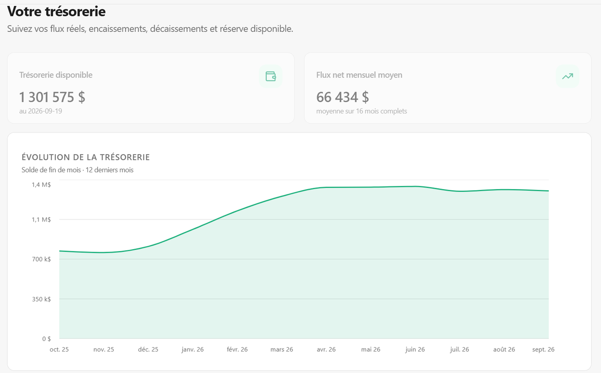
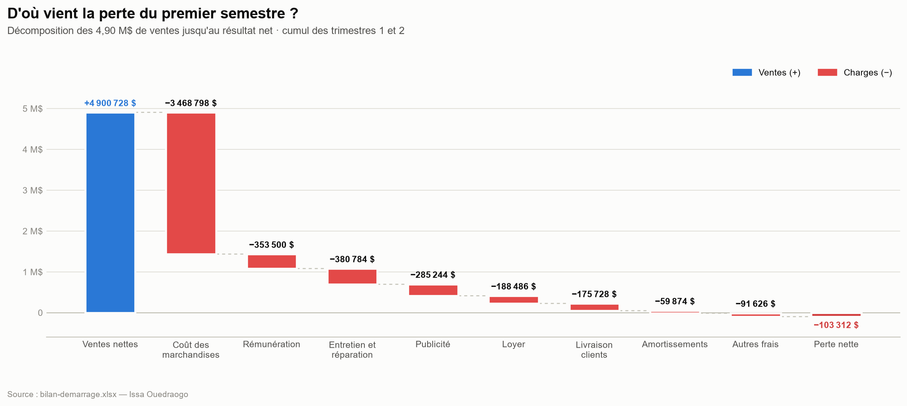
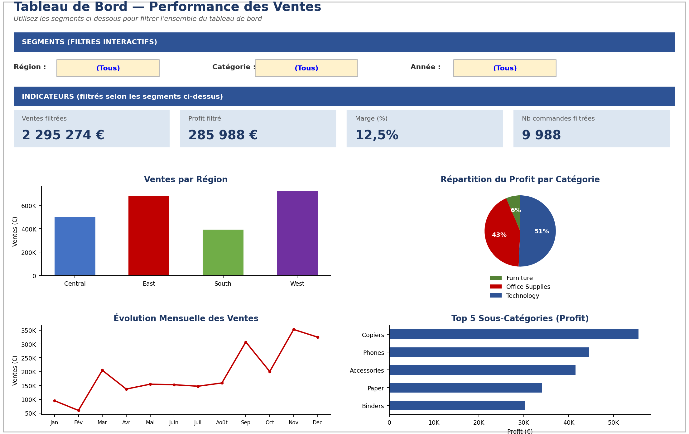
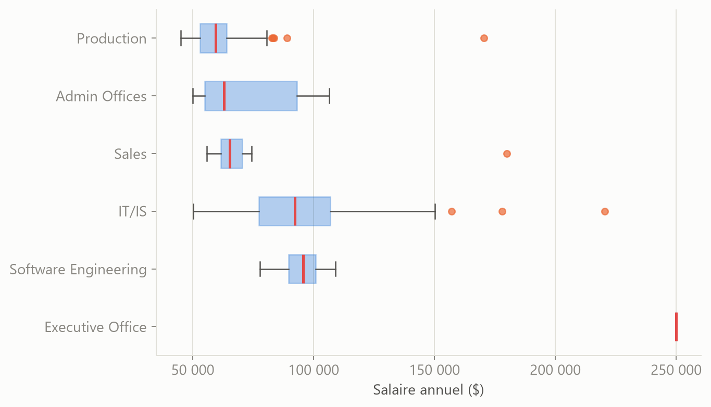
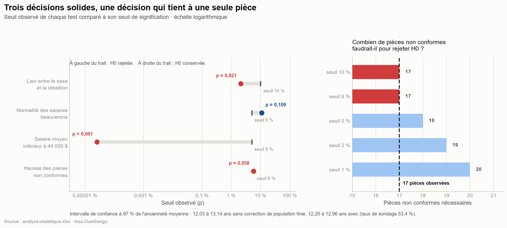
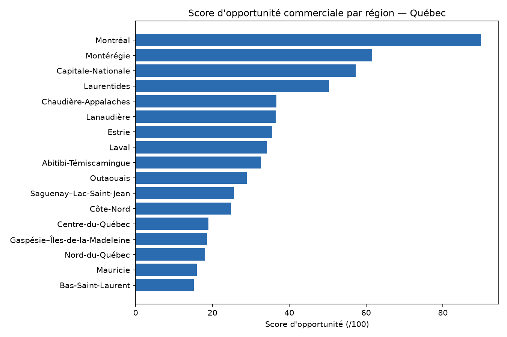

Je transforme les données d'entreprise en décisions fiables.
Mon parcours en gestion commerciale m'a appris ce qui compte pour un dirigeant : marge, trésorerie et rentabilité par produit. J'y associe l'expertise technique des données (Python, SQL, Power BI, modélisation financière) pour livrer des analyses auditées et des solutions décisionnelles concrètes comme GESCOP.
Mon parcours : de la gestion au produit décisionnel
Une progression cohérente alliant compréhension des affaires, rigueur analytique et conception logicielle.
GESCOP : De l'analyse de données au produit décisionnel
Dans chaque PME, les chiffres existent mais dorment dans des fichiers séparés (ventes, dépenses, banque, stocks). GESCOP unifie ces sources sans exiger de compétence technique et calcule 62 indicateurs clés traçables en temps réel.

Ce que résout le produit
Import universel (Excel, CSV, PDF), détection des doublons sans suppression silencieuse, réconciliation bancaire et prévision de trésorerie à 30/60/90 jours.
62 KPIs Déterministes
Zéro calcul opaque. Chaque chiffre de marge ou de BFR peut être inspecté pour révéler la formule mathématique exacte et les transactions sources associées.
Robustesse & Automatisation
React 18, Deno Edge Runtime, base relationnelle de 38 tables, Stripe Billing et 333 tests automatisés couvrant les règles comptables critiques.
Six analyses de données orientées vers l'action
Chaque étude démontre la démarche : Problématique métier → Données brutes → Interprétation → Implication concrète.

Bilan de démarrage & modélisation financière
Problème métier : Anticiper avec exactitude le point de rupture de trésorerie au premier trimestre et calculer le seuil de rentabilité par famille de produits en phase de lancement.

Dashboard Ventes & Performance Commerciale
Problème métier : Un chiffre d'affaires global en hausse masquait des foyers de pertes par catégorie. Conception d'un cockpit interactif avec liaisons SOMME.SI.ENS et segments synchronisés.

Analyse des performances RH & facteurs d'assiduité
Problème métier : Identifier les facteurs mesurables associés au rendement et à la présence des salariés. Traitement des valeurs aberrantes par département avec la règle 1,5×IQR.

Validation d'hypothèses & contrôle qualité
Objectif analytique : Recalcul indépendant complet en Python de formules d'un classeur source (tests d'hypothèses, khi-deux, régression) pour s'assurer que les conclusions résistent aux tests statistiques formels.

Géomarketing Québec : 257 755 établissements
Contexte des données : Données issues du répertoire des entreprises de l'Institut de la statistique du Québec (ISQ), traitées sous Python pour normaliser les codes d'activité et construire un score composite pondéré.
IA & Automatisation Analytique
Philosophie appliquée : L'IA (Claude Code) n'est pas interrogée pour fournir des conclusions prêtes à l'emploi. Elle sert d'accélérateur d'écriture sous une gouvernance humaine intransigeante.
Ce que je sais faire : compétences par capacités
Présentées par savoir-faire opérationnels et finalités d'affaires, sans pourcentages arbitraires.
- Python 3 (Pandas, NumPy)
- SQL (PostgreSQL, SQLite)
- Statistiques inférentielles
- Tests d'hypothèses & Chi2
- Nettoyage & Outliers (IQR)
- KPIs financiers & marge
- Trésorerie & Runway Cash
- Besoin en fonds de roulement
- Modèle DuPont & rentabilité
- Comptabilité PME (Acomba)
- Power BI Desktop (DAX)
- Excel Avancé (TCD dynamiques)
- Formules SOMME.SI.ENS
- Cockpits de pilotage
- Data storytelling exécutif
- Scripts Python d'extraction
- Intégration IA (Claude Code)
- Pipelines de validation
- Contrôle anti-hallucination
- Web Scraping structuré
- Architecture décisionnelle
- 38 tables relationnelles
- React 18 & TypeScript
- Deno Edge Runtime
- 333 tests automatisés
Matrice de preuves techniques
« Je ne vous demande pas de me croire sur parole : je vous montre les preuves et les codes sources. »
| Compétence Clé | Projet Associé | Jeu de Données | Preuve Vérifiable | Garantie de Traçabilité |
|---|---|---|---|---|
| Finance d'Entreprise | Analyse Financière Démarrage | Modélisation Acomba | Classeur 29 feuilles | ✅ Cascade T1/T2 & DuPont réconciliés |
| Business Intelligence | Dashboard Ventes Superstore | 9 988 transactions | Cockpit Excel dynamique | ✅ Formules SOMME.SI.ENS & segments |
| Statistiques & Outliers | Analyse des Performances RH | HRDataset (311 profils) | Jupyter Notebook & boxplots | ✅ Seuil 1,5×IQR documenté |
| Inférence Mathématique | Statistiques Inférentielles | 3 échantillons (2 705 obs) | Code Python Scipy | ✅ 36 contrôles croisés sans divergence |
| Analyse Territoriale | Géomarketing Québec | 257 755 étab. (ISQ) | Script Python & modèle | ✅ Source publique ISQ documentée |
| IA & Automatisation | Workflow IA Appliquée | Données de production | Historique de commits Git | ✅ Validation humaine intégrale |
| Conception Logicielle | GESCOP SaaS | Données PME réelles | Application en ligne live | ✅ 333 tests automatisés passés |
Rapport Portfolio Professionnel (24 pages)
Vous souhaitez consulter l'ensemble des graphiques haute résolution, les schémas d'architecture et les synthèses de chaque projet dans un format éditorial complet ?